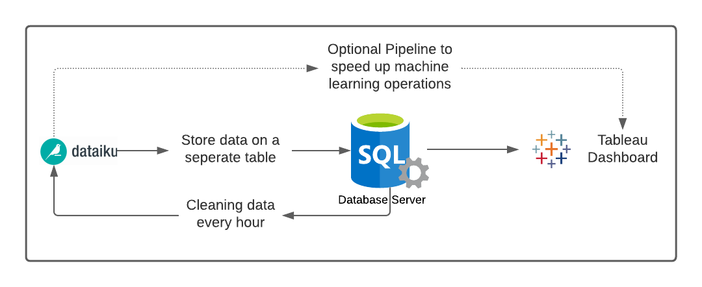
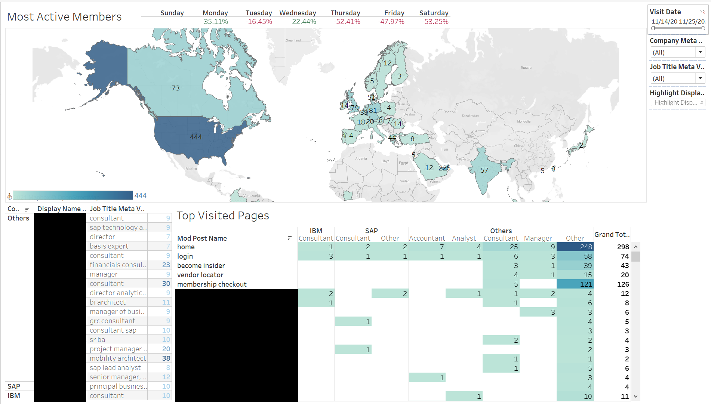
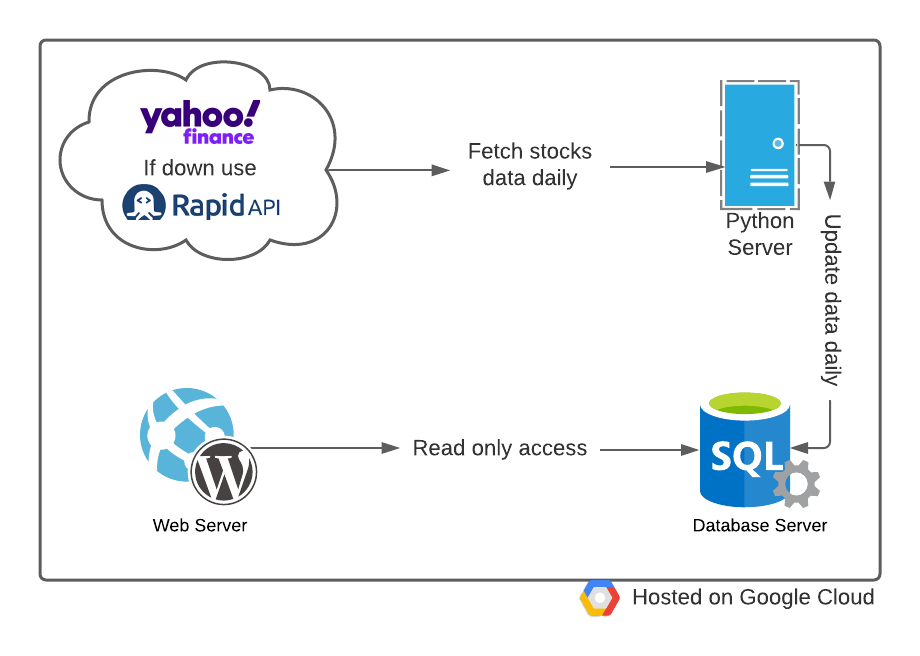
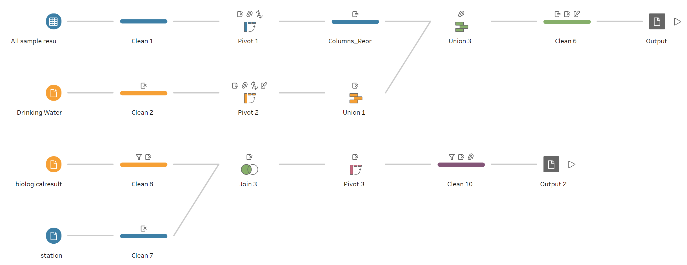
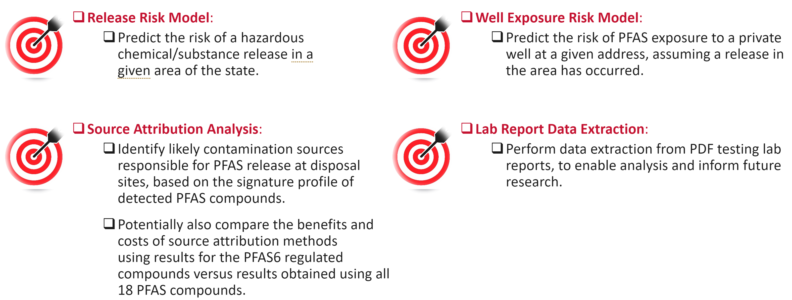

Top recent projects
Default risk model for a company with 500,000 Clients
Media/tech company in Boston, MA (with 500,000 clients) hosting its servers on-premises needed pipelines, dashboards
and machine learning models to improve their analytics and marketing operations.
The company was using a 3rd party to clean their data once a week. The pipelines I have created (using Dataiku)
automated the cleaning processes. Therefore, the company doesn't need to outsource cleaning anymore saving them costs.
Created machine learning model with ~80% accuracy to predict the churn rate of clients which the company needed for marketing.
Created several dashboards using Tableau and embedded the machine learning model to work within the dashboards.


Tools Used:
-
Python.
-
Microsoft SQL Management Studio.
-
Tableau & Tableau Prep Builder.
-
Dataiku.
Stock Prices prediction service
A client needed a website to sell subscription services to customers who are interested in predicting stock prices using machine learning. The stock prices are fetched daily from Yahoo Finance or RapidAPI and then the machine learning models are loaded from the database to the server and then it run its predictions on the new data before storing the results on a seperate database. The historical accuracy for prices predicted ranged from 80% to around 96% for some stocks.

Tools Used:
-
Python.
-
WordPress.
-
MySQL Database.
-
Google Cloud.
PFAS Analysis for massachusetts department of environmental protection
**Work in Progress**
Mass. department has huge datasets in different formats regarding PFAS contamination in ground water. The department needed those data extracted, cleaned & joined to create 2 different
machine learning models to help the department predict the presense of ground water contamination in the state and predict the risk on surrounding areas if a PFAS contamination release just occured. It's expected that the work on this project will result in new regulations and help the department eliminate exposure risk by leverging data.
Extracted and cleaned data from over ~1200 pdf files using Python and Ghostscript.
Created Machine learning model to predict the presence risk of hazardous materials in a given area.


Tools Used:
-
Python.
-
ArcGIS.
-
Tableau Prep Builder.